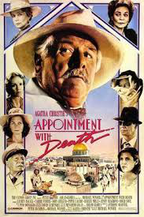

When the Middle East meets Agatha Christie
When it comes to Agatha Christie, most people will first think about the well-received adapted film- Murder on the Oriental Express. This work is indeed one of her best and often makes her readers feel on edge. However, people often enjoy themselves in the thrill and suspense too much and seldom notice her particular obsession with the Middle Eastern settings in Christie’s marvelous mysteries. Her particular obsession with the Middle Eastern settings in the books is hard to be ignored. Several of her well-received books reveal such foreign setting in the title such as Death on the Nile, Murder in Mesopotamia, and Murder on the Orient Express. Yet Appointment with Death is also one of the splendid works revolving around the Middle Eastern setting. In fact, such remote setting is the key that makes her mysteries so successful. It creates an artistic place for Christie to embody her pre-eminent techniques in crime fictions and also her daring political insights.
 Her particular obsession with the Middle Eastern settings in the books is hard to be ignored. Several of her well-received books reveal such foreign setting in the title such as Death on the Nile, Murder in Mesopotamia, and Murder on the Orient Express. Yet Appointment with Death is also one of the splendid works revolving around the Middle Eastern setting. In fact, such remote setting is the key that makes her mysteries so successful. It creates an artistic place for Christie to embody her pre-eminent techniques in crime fictions and also her daring political insights. Appointment with Death begins with the main protagonists, Gerund and Sarah and detective Poirot’s encounter with Boynton’s family in Jerusalem hotel during the holiday. Later, they happened to travel with the Boynton family to Petra, in which Mrs. Boynton is murdered. The story features Mrs. Boynton as a sadistic tyrant and she dominates over her children’s lives. She is murdered during the family trip; ironically, her death brings a relief rather than a sadness to her children, for they have been emotionally and financially controlled by their mother for many years. Christie set the beginning of the story in Jerusalem and the thrilling trip in Petra, a city in Jordan. These foreign settings are more than just a setting in the novel; in fact, those middle eastern settings foreshadow the plot later in the story. Christie’s love with such middle eastern setting derived from her experience with her second husband, an archeologist, to the Middle East.
 Given from her profound experiential knowledge of such setting, Christie in fact set Jerusalem and Petra as two crucial connotations of the plot in Appointment with Death. It opens with Carol and Raymond saying, “You do see, don’t you, that she’s got to be killed?”, which is overheard by Poirot. Later, Dr. Gerard and Sarah observe the Boynton’s behaviors. This generates readers’ feeling that a murder scene will possibly happen in the hotel of Jerusalem, a holy city to many religions. However, on the contrary, Christie used Jerusalem as the beginning setting only as a bait to add suspension; and rather she set the murder scene in Petra. It has long been known as the “rose city”, which derives from the color of Petra’s red-stones. The red color of rose is often associated with “blood” and “sacrifice”; this association at a metaphorical level foreshadows that the murder scene would happen in Petra and the victim would be Mrs. Boynton, for her sacrifice leads to the ultimate freedom and relief of the Boynton family. Therefore, Petra is not only a Middle Eastern city in the book, but a city that foreshadows and satirizes the death of Mrs. Boynton.
Given from her profound experiential knowledge of such setting, Christie in fact set Jerusalem and Petra as two crucial connotations of the plot in Appointment with Death. It opens with Carol and Raymond saying, “You do see, don’t you, that she’s got to be killed?”, which is overheard by Poirot. Later, Dr. Gerard and Sarah observe the Boynton’s behaviors. This generates readers’ feeling that a murder scene will possibly happen in the hotel of Jerusalem, a holy city to many religions. However, on the contrary, Christie used Jerusalem as the beginning setting only as a bait to add suspension; and rather she set the murder scene in Petra. It has long been known as the “rose city”, which derives from the color of Petra’s red-stones. The red color of rose is often associated with “blood” and “sacrifice”; this association at a metaphorical level foreshadows that the murder scene would happen in Petra and the victim would be Mrs. Boynton, for her sacrifice leads to the ultimate freedom and relief of the Boynton family. Therefore, Petra is not only a Middle Eastern city in the book, but a city that foreshadows and satirizes the death of Mrs. Boynton.
Moreover, Zengin (2016) argued that Appointment with Death embodies little undertone of orientalism. He criticized her degradation of “non-western” people to reinforce the standardization of the West. Her attitude of orientalism in the book is undeniable; however, setting Christie’s orientalism aside, she seems to gradually construct such degraded image of the non-western culture in her Eastern setting to create a perfect murder method and cover for Lady Westholmes, the tour guide of who committed the crime. For example, in the very beginning in Jerusalem, Sarah indicates the buildings are “awful” and the religion is “odd”, for her sleeveless dress is not allowed in the local temple. Later in Petra, the clothes of those Arabic servants are described as “patched”, “untidy” and “ragged” in westerners’ eyes. These images of the East provide Lady Westholmes an excuse to disguise herself as an Arabic servant to carry her disgraceful deed. Such disguise as a easterner is inspired from the practice of English travelers who would dress in eastern clothes in the Victorian period to unfold the mysterious eastern cultures during the Victorian period (Zengin,2016). Instead of unfolding, Christie takes it as an inspiration to create her own mystery. It seems that she deliberately arranges Lady Westholmes’ dirty deed in disguise in the dirty clothes and in such “odd” and “exotic” eastern world she describes in the book.
 Lastly, when reading Appointment with Death from a broader aspect, the whole story is actually a microcosm of the fascism happening in Europe during the 1930s; but the only difference is that Christie sets it in the far Middle East to avoid political sensitivity in Europe so that she could focus on the development of her plot and characters. Mrs. Boynton is a tyrant who controls the power physically and mentally over her family and represents those dictators like Benito Mussolini and Adolf Hitler. In fact, Lassner (2009) indicates that Christie’s exploration of her sadism can be seen as a reflection on how people “yield to” those absolute dictatorships but converted into the “feminine sphere” of an evil woman. Indeed, the story vividly delineates people’s life under such extreme dictatorship in the 1930s. Interestingly, Christie’s Middle Eastern setting is not only “a setting”. As Lassner (2009) believes, it is a setting that allows her to embody her daring and prescient political vision. In all, Christie embeds her opinions toward the society and the world in a smart and subtle way through the inconspicuous but meaningful Middle Eastern settings.
Lastly, when reading Appointment with Death from a broader aspect, the whole story is actually a microcosm of the fascism happening in Europe during the 1930s; but the only difference is that Christie sets it in the far Middle East to avoid political sensitivity in Europe so that she could focus on the development of her plot and characters. Mrs. Boynton is a tyrant who controls the power physically and mentally over her family and represents those dictators like Benito Mussolini and Adolf Hitler. In fact, Lassner (2009) indicates that Christie’s exploration of her sadism can be seen as a reflection on how people “yield to” those absolute dictatorships but converted into the “feminine sphere” of an evil woman. Indeed, the story vividly delineates people’s life under such extreme dictatorship in the 1930s. Interestingly, Christie’s Middle Eastern setting is not only “a setting”. As Lassner (2009) believes, it is a setting that allows her to embody her daring and prescient political vision. In all, Christie embeds her opinions toward the society and the world in a smart and subtle way through the inconspicuous but meaningful Middle Eastern settings.
References:
Christie, A., & Fraser, H. (1938). Appointment with death. HarperCollins.
Lassner, P. (2009). The Mysterious New Empire: Agatha Christie’s Colonial Murders. At Home and Abroad in the Empire: British Women Write the 1930s, 31-50.
Zengin, M. (2016). Orientalism in Agatha Christie’s Appointment with Death. The Journal of Academic Social Science, 99-114.